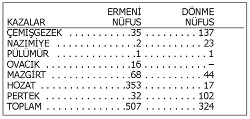

Türk Tarih Kurumu (TTK) Başkanı Prof. Dr. Yusuf Halaçoğlu’nun Kayseri’de “Kürtler Türkmen, Kürt Aleviler Ermeni kökenlidir” diye bir açıklama yaptığı gazetelere yansıdı. Ancak daha sonra anlaşıldı ki Halaçoğlu’na ait olduğu öne sürülen bu sözler cımbızla seçilmişti. TTK Başkanı’nın söyledikleri gerçekte şu şekildeydi: “Kürtlerin bir kısmı Türkmen kökenlidir, Ermeniler ise tehcirden kurtulmak için kendilerini Kürt Alevi olarak göstermiştir.” Tam linç kampanyasına dönüşmek üzereyken, Halaçoğlu’nun yeni açıklamaları fırtınayı biraz dindirdi. Peki, bu kampanyanın sebebi neydi?
TTK, Soykırım İddialarına Karşı Kale
Bu çarpıtmanın ‘bilinçli’ olduğunu anlatan Yusuf Halaçoğlu “Konu, benim görevden alınmam için çarpıtıldı.” diyor. “Basın toplantısı düzenledim. Herkese açıklıkla söyledim. Bazı gazeteler benim oradaki (Kayseri) konuşmamı deşifre ettiler. Onların yayımladığı gibi olmadığı ortaya çıkmadı mı? Evet çıktı. Niye bazı köşe yazarları, bazı kesimler hâlâ aynı şekilde yükleniyor? Bunları okumadılar mı?” diye soran Yusuf Halaçoğlu, “Kripto Ermeniler mi bu linç kampanyasını sürükledi?” sorusuna ise şu cevabı veriyor: “Kripto Ermeniler diyebilirsiniz, onların dışında birtakım gruplar diyebilirsiniz. Gazetelerde kimler yazıyorsa onlar.”
Türk Tarih Kurumu son yıllarda Ermeni soykırımı iddialarına karşı birçok somut tez geliştirdi. Özellikle kurum bünyesindeki Ermeni Masası soykırım olmadığına dair birçok araştırmaya imza attı. Halaçoğlu’nun deyimiyle TTK soykırım iddialarına karşı kale olarak duruyordu. “Beni görevden aldırırlarsa çok önemli bir kale kaybedilmiş olur. Çünkü bugün Ermeniler konusundaki en ciddi araştırmaları ben yaptım. Herkese meydan okuduk. Bugün hiç kimse Türk Tarih Kurumu’nun çalışmalarına karşılık veremiyor. Ermeni diasporasının bu propagandaları ile ileriye sürülen soykırımı kabul etme raddesine gelmiş bir ülkenin artık kabul etme durumu/imkânı kalmadı. Kamuoyu bu konuda tamamen bilinçli hale geldi. Bunun önündeki en önemli engel kimdi: Yusuf Halaçoğlu.”
Başkan Halaçoğlu’nun tartışmalara neden çalışmaları iki başlıkta toplanıyor. Birincisi 15 ve 16. yüzyılda Anadolu’da yaşayan aşiretler. 1995 yılında başlayan çalışmada Osmanlı tahrir defterlerinin incelenmesi sonucu Anadolu’da yaşayan 41 bin 297 aşiret tespit edildi. Bunların 37 bin 706’sı Türkmen, 2 bin 287’si Kürt, 166’sı Moğol, 90’ı Arap, 280’i Kıpçak. O yıllarda Anadolu’da yaşayan Osmanlı nüfusunun 10 milyonun biraz üzerinde olduğunu tahmin eden Halaçoğlu, bu 41 bin aşiretin 1 milyon 140 bin çadıra sahip olduğunu anlatıyor. Bu çadırlarda 4-5 kişi yaşadığını hesaplayıp aşiretlere mensup kişi sayısının 6 milyon civarında olduğunu ifade ediyor.
Osmanlı İmparatorluğu vergi aldığı herkesi kayıt altında tutuyordu. Sadece kadınlar vergi vermedikleri için kayıtlarda görünmüyordu. TTK Başkanı’nın demografik ve sosyal yapıyla ilgili bu çalışması da Kürtlerin Türkmen asıllı olduğu şeklinde yansıdı. Halaçoğlu, böyle bir açıklaması olmadığını, Kürtlerin ‘bir kısmının’ Türkmen olduğunu dile getiriyor. Henüz çalışmasını tamamlamasa da “Yüzde 30’lara çıkabilir Kürtleşmiş Türklerin sayısı” diyen Halaçoğlu, bunun tersinin de olduğunu belirtiyor. Mesela Aydın ve Konya gibi illere gelen Kürtlerin bir kısmı Türkleşmiş.
Amacım Dönmeleri Araştırmak Değil
Bu araştırmada birisi hangi köyden, beldeden ya da hangi lakapla anıldığını söylediğinde hangi aşiretten ve hangi boydan geldiği ortaya çıkıyor. “Günümüzde nasıl evlilikler varsa haliyle o zaman da oluyor. Kürtleşme ya da Türkleşme gündemde. İç içe girmişler. Türk-Kürt ayrımına gayret edenlere karşı çok önemli bir argümandır bu çalışma.”
Halaçoğlu’nun araştırmasının ikinci boyutu ise Ermenilerle ilgiliydi. Talat Paşa tarafından 1915’te alınan tehcir kararı, Anadolu’da yaşayan Ermenilere uygulandı. 1 milyonun üzerinde Ermeni vatandaşın büyük kısmı güneye göçtü. Bir kısmı savaşlarda ölürken kimileri topraklarından ayrılmamak için dinini değiştirdi. Bazıları ise Yusuf Halaçoğlu’nun deyimiyle kendisini “Kürt Alevi” olarak gösterdi.
Yusuf Halaçoğlu, amacının Ermeni dönmeleri araştırmak olmadığını söylüyor: “Dönmelerin listesi belli bir oranda var. Nerde olduğunu söylemiyorum. Onların gereği yok. Benim amacım tehcirde ölmeyen Ermenileri ortaya çıkarmak.” 1915 olaylarının soykırım olduğunu iddia edenler, 600 bin ile bir buçuk milyon arasında değişen rakamlarda Ermeni’nin öldürüldüğünü savunuyor. Yusuf Halaçoğlu ise 300 bin Ermeni’nin savaşlarda öldüğünü ortaya çıkardığını ifade ediyor. “Ben ne kadar Ermeni’nin hayatta olduğunu araştırırken bunlara rastladım. Sünni Müslüman olan Ermeniler de var. Tehcirden kurtulmak için Müslümanlığa geçenler var. Nereye gittiklerini araştırmak zorundayız. Bunların içinde kendilerini sadece Kürt olarak gösteren, Kürt Alevi olarak gösterenler var. Bunlar 1915-20 arasında kendini gizleyenler. Elimizde bu çalışmalar yoktu.” diyor. Ermenilerin bir kısmının kendini Balkan göçmeni olarak da gösterdiğini söylüyor.
Ermeni Dönmeleri Açıklama Şartı
Talat Paşa, Müslümanlığa geçmiş olsalar bile Ermenilerin tehcire tabi tutulması yönünde emir vermişti o yıllarda. Yani Müslümanlığa bir teşvik yoktu. Ancak cephelerde mücadele eden Osmanlı kuvvetleri Tunceli vilayetine hâkimiyet kuramıyordu, isyanlar baş göstermişti. “Ermeniler saldırılara maruz kalmamak için kendilerini Kürt Alevi olarak göstermiştir” diyen Halaçoğlu, Osmanlı kuvvetlerinin bu bölgelere giremedikleri için Ermenilerin tehcirden kurtulduğunu ve tespit edilemediklerini söylüyor.
Son bir yıldır çalıştığı “Tehcirde ölmeyen Ermeniler nerede?” çalışmasında ortaya çıkan dönmelerin rakamlarını, nerede yaşadıklarını, kim olduklarını, kaynaklarını açıklamaya yanaşmıyor Halaçoğlu. Araştırmasının bugünü kapsamadığını, gizli Ermenileri ve sayılarının ne olduğunu bilmediğini belirtiyor. Ermeni dönmelere ait bu belgelerin başka hangi kurumlarda olduğu ise bilinmiyor. “Benim bildiğim, sadece benim elimde var. Herhangi bir yere vermedim” diyen Halaçoğlu, bu listeleri açıklama şartını koyuyor: “Eğer yabancı ülkelerde nüfus meselesi ile ilgili bir tartışma meydana gelirse ancak o zaman söylerim. Hâlâ karşımdaki insanlar bunu iddia eder ve devlet de olumlu görürse bunu da sunarım. Ama insanları huzursuz etmek, rahatsız etmek veya yaşadıkları ortamda birtakım baskılara maruz bırakacak tavır takınılması hakkına sahip değilim.”
Ermeni dönmelerin fişlendiği, devlet tarafından kara listelere konulduğu, etnik ayrımcılık yapıldığı öne sürüldü. Yusuf Halaçoğlu, Ermeni dönmelerin listesinin elinde olduğunu, cımbızla çekilen “Kürt Aleviler Ermenidir” sözünün ardından söylemiş: “Belgesi varsa söylesin dediler. Niye elimde bir seneden fazla duruyor da açıklamadım?”
Bunlar, Devlet Politikası Değil
İngilizler tarafından 1921 Kasım’ında Milletler Cemiyeti’ne sunulan raporda Müslümanlığa geçen Ermenilerin sayısı 95 bin olarak zikrediliyor, dünyadaki Ermeni nüfusu ise 3 milyon. Bunun 817 bini Anadolu’dan başka ülkelere göç etmiş. Ermeni Milli Delegasyon Başkan Yardımcısı Thomas Mugerditchian’ın raporunda Ermeni aşiretlerinin, hangi Kürt aşiretleri adını aldıkları ortaya konuluyor.
Peki, tüm bunlar devlet politikası mı yoksa bilimsel çalışma mı? Yusuf Halaçoğlu bu araştırmaların devletle alakası olmadığını söylüyor: “Dört buçuk yıl boyunca veya ondan önceki sekiz hükümet döneminde -başbakan ya da bakanlar dâhil- hiç kimse telkinde bulunmadı, talimat vermedi.” TTK’nın siyasi iradeyle yönetilmediğini anlatan Halaçoğlu “Siyasi iradeye bağlı, bilimsel politikası ve özgürlüğü, mali özgürlüğü olan” diye tanımlıyor kurumu: “Ben hiçbir zaman devlete politika üretmek için araştırma yapmıyorum. Eğer devletin, yetkililerin, siyasi otoritenin hoşuna gidiyorsa alıyor bunu, politika olarak uyguluyor.”
Tüm bu tartışmaların ardından Yusuf Halaçoğlu Türk, Kürt, Ermeni tartışmalarına “Kişi kendini ne hissediyorsa öyledir. Ben ırkçılık yapmıyorum” diye nokta koyuyor.
İşte Tunceli’deki Ermenilerin ve Dönmelerin Sayısı
Ermeni dönmelerin genel nüfus içinde sayılarının çok az olduğunu söyleyen Prof. Yusuf Halaçoğlu’nun elindeki mavi kaplı ‘Ermeni dönmeler’ listesine göre 1915-20 tarihleri arasında Tunceli’nin ilçelerinde yaşayan Ermenilerin ve Ermeni dönmelerin nüfusu şöyle:
İbrahim Doğan / Aksiyon Dergisi
